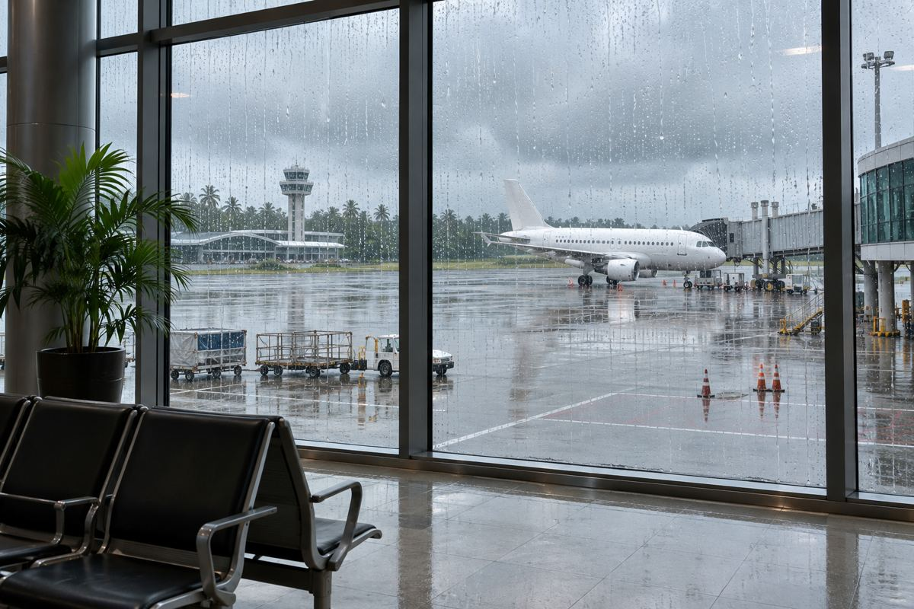

出行与运行 / EXPLAINED
亚航提醒季风期间预留机场交通时间，国际航班建议提前3小时到达
11月2日出行提示同时考虑客流与道路情况；到达建议不等于值机截止时间。

亚航11月2日发布年末出行提示，建议国际航班旅客提前3小时到机场，国内航班提前2小时。提示不仅涉及客流增加，还考虑季风期大雨和道路拥堵。公司称，马来西亚东北季风预计从2026年10月27日持续至2027年3月，尤其11月至1月的持续强降雨可能影响出行。
亚航是覆盖亚洲多个市场的航空品牌。这份从雪邦发布的提示还谈到吉隆坡国际机场第二航站楼交通，不应被理解为全球所有机场的法定手续改变。旅客需要同时核对实际承运人和出发机场的具体要求。
公告称，可通过MOVE应用或网站在出发前14天至1小时办理自助值机。这与提前2或3小时到达机场是不同标准。网上值机后可能仍需托运行李、出境检查和安检，手机获得登机牌并不意味着可以很晚才到航站楼。
亚航建议在出发前24小时及动身前往机场前再次查航班状态。雨水、积水和拥堵会延长地面旅程，即使飞机仍准时，旅客也可能受影响。公司为第二航站楼旅客推荐ERL铁路，但实际班次和运行状态仍需另查。
准备阶段就可检查联系方式，而不必等到机场。预订中的邮箱和手机号也应保持有效，以便出现运行中断时接收变更通知与可用自助选项。此次提示不是宣布某天全面停飞，也不是所有机票可免费改签。具体选择取决于实际中断情况及公司对该订单发出的说明。
本刊分析认为，行程余量不应只围绕飞行时间设置。把紧张的机场接驳与另行出票的短时间中转叠加，会增加延误影响后续安排的可能。不过资料没有给出各机场延误概率或特定航班取消预测，不能把季节信息改写成个别航班的停飞预报。
这是一份11月2日发布的年末建议，并非11月9日开始实施的新统一规定。出发当天，可分别查询航司运行状态、当地官方天气预报和机场交通。区分网上值机窗口、建议到达时间和具体航班截止要求，才能准确应用到个人行程。